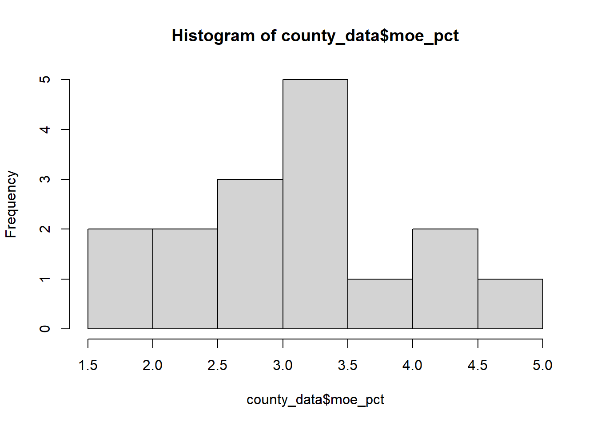

library(tidyverse)
library(tidycensus)Assignment 2: Who Do We Know the Least About?
Measuring uncertainty in American Community Survey data
Setup
The question
Every number the American Community Survey publishes is an estimate drawn from a sample, not a count. That means every number comes with a margin of error — a statement about how wrong it might be.
Most people ignore it. In this assignment, you won’t.
** Maine is one of the least populated states and is the most forested in the entire country, which means people are spread apart with long distances to travel. In this analysis, I look at the travel time to work across counties in Maine, and test the reliability of the data between each area.**
Choosing what to measure
my_state <- params$state
my_variable <- "B08303_001" # total travel time to workPulling the data
county_data <- get_acs(
geography = "county",
variables = my_variable,
state = my_state,
year = 2023,
survey = "acs5"
)Let’s look at what came back.
dim(county_data)[1] 16 5head(county_data)# A tibble: 6 × 5
GEOID NAME variable estimate moe
<chr> <chr> <chr> <dbl> <dbl>
1 23001 Androscoggin County, Maine B08303_001 48226 1013
2 23003 Aroostook County, Maine B08303_001 26005 704
3 23005 Cumberland County, Maine B08303_001 134152 2045
4 23007 Franklin County, Maine B08303_001 12103 543
5 23009 Hancock County, Maine B08303_001 23866 701
6 23011 Kennebec County, Maine B08303_001 51512 1295There are 16 counties in Maine and there are 16 rows!
How big is the margin of error?
A margin of error of 3,000 means something very different for an estimate of 20,000 than for an estimate of 200,000. To compare across places, we need it as a percentage.
county_data <- county_data %>%
mutate(moe_pct = moe / estimate * 100)Most margins of error are in the 1.5-4.75% range relative to the estimate.
Now sort to see which counties are measured least reliably.
county_data %>%
arrange(desc(moe_pct)) %>%
select(NAME, estimate, moe, moe_pct) %>%
head(10)# A tibble: 10 × 4
NAME estimate moe moe_pct
<chr> <dbl> <dbl> <dbl>
1 Piscataquis County, Maine 6606 314 4.75
2 Franklin County, Maine 12103 543 4.49
3 Sagadahoc County, Maine 16024 661 4.13
4 Lincoln County, Maine 14665 535 3.65
5 Waldo County, Maine 15616 542 3.47
6 Knox County, Maine 16077 540 3.36
7 Washington County, Maine 11149 360 3.23
8 Oxford County, Maine 23238 742 3.19
9 Somerset County, Maine 19930 603 3.03
10 Hancock County, Maine 23866 701 2.94Piscataquis County, which is in central-northern Maine has the highest margin of error percentage at 4.75% of the estimate.
Sorting counties into reliability categories
# observe spread of MOE percentage valuess
hist(county_data$moe_pct)
county_data <- county_data %>%
mutate(reliability = case_when(
moe_pct < 2.5 ~ "High confidence",
moe_pct < 3.5 ~ "Moderate",
TRUE ~ "Low confidence"
))
count(county_data, reliability)# A tibble: 3 × 2
reliability n
<chr> <int>
1 High confidence 4
2 Low confidence 4
3 Moderate 8For these counties, the margin of error percentage was relatively low, which meant using the 5% and 10% cutoffs for high and moderate confidence were unsuitable. Instead, a 2.5% cutoff was used for high confidence and 3.5% was used for moderate confidence instead. 4 counties had high and low confidence, while 8 had moderate confidence.
Is the margin of error bigger in small places?
To answer this we need population and our variable side by side, in the same row. That means a wide pull.
county_wide <- get_acs(
geography = "county",
variables = c(myvar = my_variable,
pop = "B01003_001"),
state = my_state,
year = 2023,
survey = "acs5",
output = "wide"
)
head(county_wide)# A tibble: 6 × 6
GEOID NAME myvarE myvarM popE popM
<chr> <chr> <dbl> <dbl> <dbl> <dbl>
1 23001 Androscoggin County, Maine 48226 1013 112323 NA
2 23003 Aroostook County, Maine 26005 704 67227 NA
3 23005 Cumberland County, Maine 134152 2045 305940 NA
4 23007 Franklin County, Maine 12103 543 30145 NA
5 23009 Hancock County, Maine 23866 701 56084 NA
6 23011 Kennebec County, Maine 51512 1295 125614 NAcounty_wide <- county_wide %>%
mutate(moe_pct = myvarM / myvarE * 100) %>%
mutate(reliability = case_when(
moe_pct < 2.5 ~ "High confidence",
moe_pct < 3.5 ~ "Moderate",
TRUE ~ "Low confidence"
))Now compare the average population of counties in each reliability category.
county_wide %>%
group_by(reliability) %>%
summarize(
n_counties = n(),
avg_population = mean(popE)
)# A tibble: 3 × 3
reliability n_counties avg_population
<chr> <int> <dbl>
1 High confidence 4 196641.
2 Low confidence 4 30051.
3 Moderate 8 58829 The average population for high confidence counties were many times higher than other confidence categories. Counties with low confidence had the lowest average population by far. Based on these results, higher populations may produce more representative data, as outliers are better dealt with in larger sample sizes.
What this means for policy
The following counties had the highest margin of error (in order): Piscataquis, Franklin, Sagadahoc, and Lincoln county. These counties had some of the lowest populations in the entire state. Generally, smaller sample sizes yield more frequent outliers and a normal distribution is less expected due to the lack of “average” samples. Counties with the highest confidence were the most populous. These counties included Cumberland, Androscoggin, Penobscot, and York. York and Cumberland are the most southern counties, which make them that much closer to the rest of New England. Cumberland is also home to the better Portland and Bowdoin College. Interestingly, counties that had colleges outside of Portland, such as Bates, UMaine, or Colby, had higher confidences. With the presence of these colleges, population counting is more accurate. Ignoring margins of error can be harmful, especially when the data may not be representative of the target population. In this case, the time spent traveling in a low reliability county may not actually be accurate. Hypothetically, if this county actually had a much higher travel time to work compared to what the data says, they may not get the appropriate allocation of funding for infrastructure and road development. This can be harmful when the data says another county has high travel time, despite that not being true, which can lead to funding cuts for a county that actually needs it.

Optional challenges - For those craving more
Propagate Margin of Error
county_wide <- get_acs(
geography = "county",
variables = c(myvar = my_variable,
income = "B19013_001"),
state = my_state,
year = 2023,
survey = "acs5",
output = "wide"
)
county_wide <- county_wide %>%
mutate(moe_prop = moe_prop(myvarE, incomeE, myvarM, incomeM))
head(county_wide)# A tibble: 6 × 7
GEOID NAME myvarE myvarM incomeE incomeM moe_prop
<chr> <chr> <dbl> <dbl> <dbl> <dbl> <dbl>
1 23001 Androscoggin County, Maine 48226 1013 67298 2594 0.0315
2 23003 Aroostook County, Maine 26005 704 54254 1663 0.0196
3 23005 Cumberland County, Maine 134152 2045 92983 1733 0.0347
4 23007 Franklin County, Maine 12103 543 58522 4890 0.0196
5 23009 Hancock County, Maine 23866 701 69630 2902 0.0175
6 23011 Kennebec County, Maine 51512 1295 65062 2268 0.0340Write Function and Iterate
Does the small-places-are-noisier pattern hold everywhere, or are some states different?
data_pull <- function(variable, state) {
get_acs(
geography = "county",
variables = c(myvar = variable,
pop = "B01003_001"),
state = state,
year = 2023,
survey = "acs5",
output = "wide"
) %>%
mutate(state = state)
}
states <- c("AZ", "HI", "TX", "AK", "WY", "SC", "NJ")
var <- "B08303_001"
multi_state_data <- map_dfr(states, ~data_pull(variable = var, state = .x)) %>%
mutate(moe_pct = myvarM / myvarE * 100) %>%
mutate(reliability = case_when(
moe_pct < 5 ~ "High confidence",
moe_pct < 10 ~ "Moderate",
TRUE ~ "Low confidence"
)) %>%
arrange(desc(moe_pct))
multi_state_data %>%
group_by(state, reliability) %>%
summarize(
n_counties = n(),
avg_population = mean(popE)
) %>%
arrange(state, reliability)# A tibble: 17 × 4
# Groups: state [7]
state reliability n_counties avg_population
<chr> <chr> <int> <dbl>
1 AK High confidence 7 86673.
2 AK Low confidence 9 2076.
3 AK Moderate 14 7755.
4 AZ High confidence 13 557086
5 AZ Moderate 2 13028.
6 HI High confidence 4 361398
7 HI Low confidence 1 43
8 NJ High confidence 21 441286.
9 SC High confidence 30 162096.
10 SC Low confidence 1 9701
11 SC Moderate 15 22680.
12 TX High confidence 104 269416.
13 TX Low confidence 54 3363.
14 TX Moderate 96 14995.
15 WY High confidence 11 41257.
16 WY Low confidence 4 5302.
17 WY Moderate 8 13091.The principle still holds where smaller populations have lower reliability.
Change the geographic scale
my_variable <- "B08303_001"
knox_tract_data <- get_acs(
geography = "tract",
variables = c(travel = my_variable,
pop = "B01003_001"),
county = "Knox",
state = my_state,
year = 2023,
survey = "acs5",
output = "wide"
)
knox_tract_data %>%
mutate(moe_pct = travelM / travelE * 100) %>%
arrange(desc(moe_pct))# A tibble: 13 × 7
GEOID NAME travelE travelM popE popM moe_pct
<chr> <chr> <dbl> <dbl> <dbl> <dbl> <dbl>
1 23013990000 Census Tract 9900; Knox Coun… 0 11 0 11 Inf
2 23013970600 Census Tract 9706; Knox Coun… 910 208 2188 330 22.9
3 23013970900 Census Tract 9709; Knox Coun… 838 186 2603 23 22.2
4 23013970401 Census Tract 9704.01; Knox C… 2053 341 4893 15 16.6
5 23013970800 Census Tract 9708; Knox Coun… 1158 188 2804 275 16.2
6 23013970402 Census Tract 9704.02; Knox C… 1226 188 2761 18 15.3
7 23013970200 Census Tract 9702; Knox Coun… 1675 252 5243 18 15.0
8 23013970700 Census Tract 9707; Knox Coun… 2041 278 4803 326 13.6
9 23013971100 Census Tract 9711; Knox Coun… 612 76 1695 168 12.4
10 23013971000 Census Tract 9710; Knox Coun… 964 117 2683 230 12.1
11 23013970500 Census Tract 9705; Knox Coun… 1515 178 3663 23 11.7
12 23013970302 Census Tract 9703.02; Knox C… 1736 183 4311 264 10.5
13 23013970301 Census Tract 9703.01; Knox C… 1349 119 3213 241 8.82The margins of error are much higher at the tract level relative to the estimates. This is reflected in the margin of error %. The county level is a good medium for analyzing ACS data for the reason of acceptable accuracy. A higher resolution results in less accurate data.